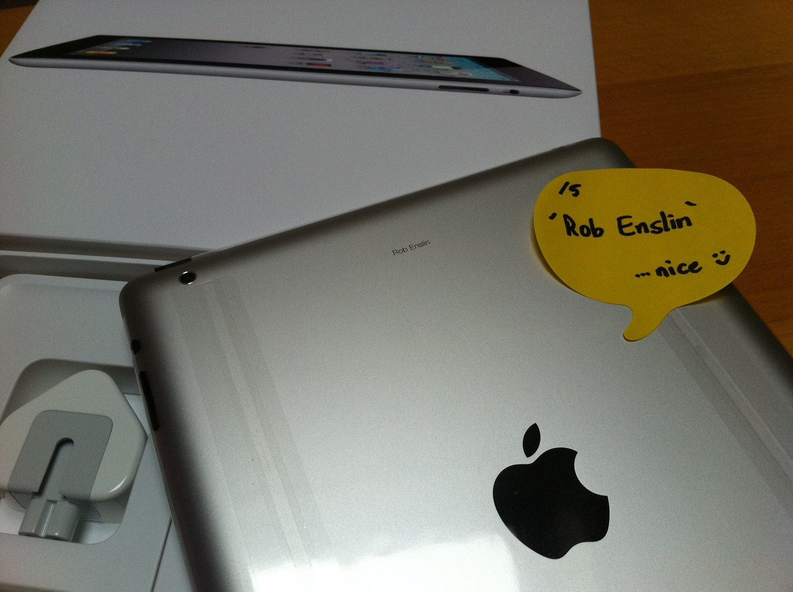

The Autopsy Report · Device #071
The Apple iPad 2
The tablet that made tablets inevitable: thinner, lighter, and faster than the original, with a chip that defined mobile computing for a decade. Our representative is the Wi-Fi model, A1395. iFixit summary
What is this thing?
The iPad 2 is Apple's second tablet, released in March 2011 — the machine that turned the iPad from a promising experiment into the default tablet. It kept the original's 9.7-inch 1024×768 display but went thinner (0.34 inches), lighter, and much faster, adding front and rear cameras and the gyroscope the original lacked. Three variants existed: A1395 (Wi-Fi), A1396 (GSM), and A1397 (CDMA) — and the FCC filings treat them as three separate devices, which matters for the paperwork below. Our representative is the Wi-Fi model, A1395: the one in the photo, the one iFixit tore down first, and the one with the clearest public record. iFixit teardown · FCC filing
Not yet on our bench
No iPad 2 has sat on our bench yet. No disassembly, no battery test, no dock-connector probing, no original-unit photography. Everything below comes from iFixit's public teardown and the FCC's own filing database. When an iPad 2 lands on the bench, this page gets its second act.
A short history
- March 2011The iPad 2 launches — thinner, lighter, dual-core A5, cameras front and back, gyroscope, and the Smart Cover with its magnetic hinge. The FCC granted the Wi-Fi model's filing on March 2, days before launch. iFixit summary · FCC filing
- 2011–2012The iPad 2 becomes the best-selling tablet on earth and the classroom standard. Apple keeps selling it long after the iPad 3 and 4 arrive — it stayed in the lineup until 2014, an unusually long run. iFixit summary
- 2012A quiet revision: Apple swaps the A5 for a 32 nm die-shrunk version (the "iPad 2,4") in later units — same name, cooler-running chip. The public teardown record covers the original. iFixit teardown
The outside
A 9.7-inch glass slab, 0.34 inches thin, aluminum back, one Home button — the silhouette every tablet since has quoted. Around the edges: the 30-pin dock connector on the bottom, a headphone jack and sleep/wake button up top, volume and mute/orientation switch on the right side, and on this generation, front VGA and rear 720p cameras. The Smart Cover's magnetic hinge snaps to the left edge. The teardown unit's battery is a three-cell 3.8 V, 25 Wh pack — and iFixit's most quoted finding about the outside is that the front glass is glued on, making opening the device a heat-gun affair. iFixit teardown

The board
The teardown record for the Wi-Fi A1395 reads like a 2011 mobile-industry census. The star is the Apple A5 — 1 GHz dual-core, Apple's second custom SoC — with 512 MB of Samsung RAM stacked on the package. Storage on the torn-down unit: Toshiba TH58NVG7D2FLA89 16 GB NAND (32 and 64 GB options existed). The wireless is Broadcom BCM43291HKUBC; the touchscreen controllers are Broadcom BCM5973KFBGH and BCM5974; power management includes TI CD3240B0; and motion sensing comes from STMicroelectronics gyroscope and accelerometer parts. One honest gap, stated plainly: Apple publishes no datasheet for the A5. Everything we know about it comes from teardowns and observation, not the manufacturer — so it stays Likely, never Confirmed. iFixit teardown · iFixit summary
Under the microscope: the chips
Wi-Fi model A1395 only. Teardown findings are Likely — direct physical evidence from iFixit's teardown, not manufacturer datasheets. Confirmed is reserved for the FCC filing.
| Chip | What it does | How we know | Dig deeper |
|---|---|---|---|
| Apple A5 1 GHz dual-core SoC |
The main processor — CPU, GPU, and memory interface on one Apple-designed package. | Likely iFixit's teardown identifies the package. No public Apple datasheet exists — stated honestly. | iFixit teardown |
| Samsung 512 MB RAM package-on-package |
System memory, stacked on the A5 package. | Likely iFixit's teardown marking identification. | iFixit teardown |
| Toshiba TH58NVG7D2FLA89 16 GB NAND (torn-down unit) |
Flash storage. 32/64 GB options existed at other price points. | Likely iFixit's teardown marking identification. | iFixit teardown |
| Broadcom BCM43291HKUBC | Wi-Fi/Bluetooth combo. | Likely iFixit's teardown marking identification. | iFixit teardown |
| Broadcom BCM5973KFBGH / BCM5974 | Touchscreen controllers. | Likely iFixit's teardown marking identification. | iFixit teardown |
| TI CD3240B0 | Power management / touchscreen-related TI part per the teardown. | Likely iFixit's teardown marking identification. | iFixit teardown |
| STMicro gyroscope + accelerometer | Motion sensing — new on the iPad 2 versus the original. | Likely iFixit's teardown marking identification. | iFixit summary |
The government's file
This one is clean: the Wi-Fi model's FCC filing is BCGA1395, with the original grant dated 2011-03-02 and a Class II permissive change dated 2012-03-07. And the model-number discipline matters: the GSM (A1396) and CDMA (A1397) variants carry separate filings — the BCG prefix plus the model number is Apple's filing convention, and each radio configuration gets its own paperwork. Confirmed — straight from the filing record. FCC filing BCG A1395
Listening, not knocking
Our posture: we listen, we don't knock. The iPad 2's documented path is Apple's own recovery procedure — recovery mode and restore via a computer, the manufacturer's sanctioned way back from a bad software state. Documenting that such a manufacturer procedure exists is the whole of this section: no button sequences published here, no instructions, no lock defeat. And the anti-theft line, stated once and finally: we do not bypass Activation Lock, and we never will — it protects stolen devices, and defeating it is not BareBoard's business. When an iPad 2 reaches our bench: visual inspection, battery voltage check against the 3.8 V / 25 Wh rating, and a documented restore test on a unit we own. Listening only. iFixit teardown
What we didn't do
- No bench work yet: no disassembly, no battery test, no original-unit photos.
- We performed no restore, no jailbreak, no baseband work — and publish no procedures for any of it.
- We did not bypass Activation Lock or any passcode — and we never will.
- Nothing here touches credentials, keys, or user data.
By the numbers
- Device: Apple iPad 2 — Wi-Fi A1395 (representative); GSM A1396; CDMA A1397 iFixit teardown
- Launched: March 2011 · FCC grant 2011-03-02 FCC filing
- SoC: Apple A5, 1 GHz dual-core (no public datasheet) iFixit teardown
- Memory/storage: 512 MB RAM · 16/32/64 GB NAND iFixit teardown
- Display: 9.7" 1024×768 · front VGA + rear 720p cameras iFixit teardown
- Battery: 3.8 V, 25 Wh, three cells iFixit teardown
- FCC: BCG A1395 (Wi-Fi) — Confirmed FCC filing
What awaits the bench
- An iPad 2 of our own — model number, our photos, battery voltage against the 25 Wh rating.
- A documented restore test on a unit we own, via Apple's own procedure.
- Chip-marking photography to cross-check the teardown record.
- The A5 die-shrink question: is our unit the original or the later 32 nm revision?
- A regulatory-label photo to confirm the filing marks on the hardware itself.
Words to know
Every term this page uses, in plain English. No prior knowledge required.
- System on a chip (SoC)
- Processor, graphics, and more on one die. The A5 is Apple's second mobile SoC.
- NAND flash
- The non-volatile storage chips holding the operating system and your data.
- Package-on-package
- Stacking the RAM directly on top of the processor package — saves board space in thin devices.
- Gyroscope / accelerometer
- Motion sensors: the gyro measures rotation, the accelerometer measures tilt and movement. New on the iPad 2.
- 30-pin dock connector
- Apple's wide pre-Lightning connector for charging, sync, and accessories.
- Class II permissive change
- An FCC filing update for a modified version of an already-approved device.
- Activation Lock
- Apple's anti-theft system tying a device to its owner's Apple Account. We document its existence; defeating it is out of scope, always.
Sources & confidence
- Chip markings, battery rating, cameras, glued glass: iFixit's teardown and summary. High confidence as physical evidence — badges stay Likely, not Confirmed, since Apple publishes no datasheets.
- FCC ID, grant date, Class II change: the FCC filing record. High confidence — Confirmed.
- Model variants (A1395/A1396/A1397): the filing record and teardown. High confidence.
- A5: no public datasheet — honestly marked as an information gap.
- Anything not listed here is unknown until the bench says otherwise. We'll say so, out loud, when that's the case.
The device photo is a freely licensed stock photo, credited in its caption — not a photo of our own unit, because we don't have one yet.
Legal note. BareBoard is an educational project. Everything on this page is our own writing based on public documents — our summaries, our analysis. We don't publish, host, or distribute firmware, keys, passwords, or credentials. Product names and trademarks belong to their respective owners and appear here only to identify the hardware. If you believe anything here infringes your rights, contact us and we'll address it promptly.